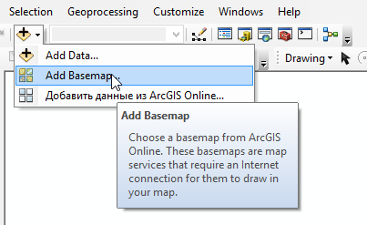
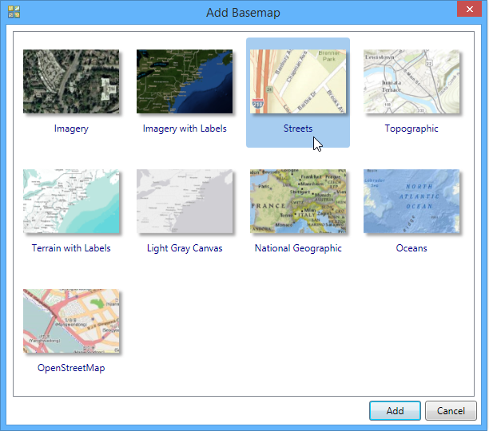
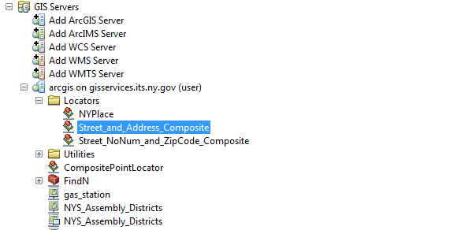
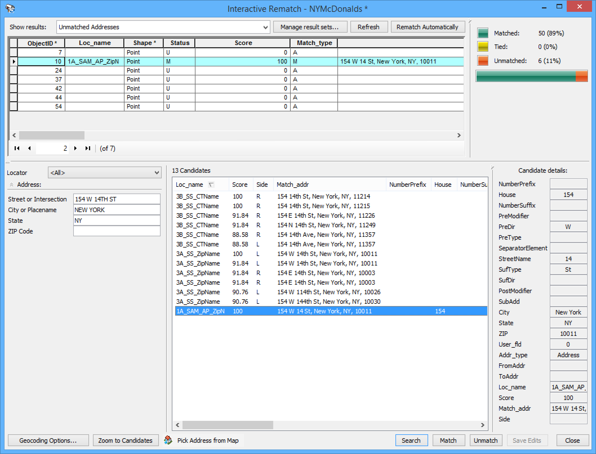
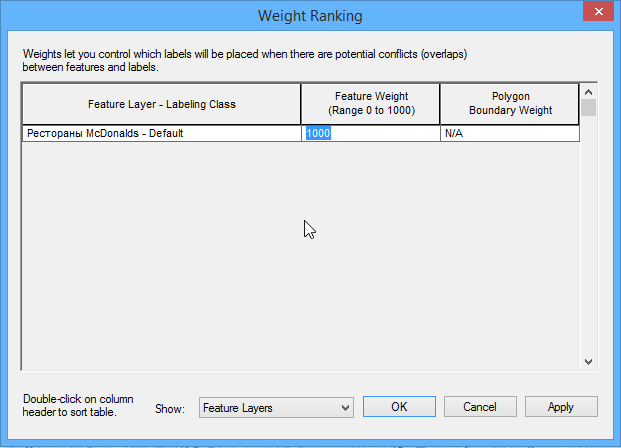
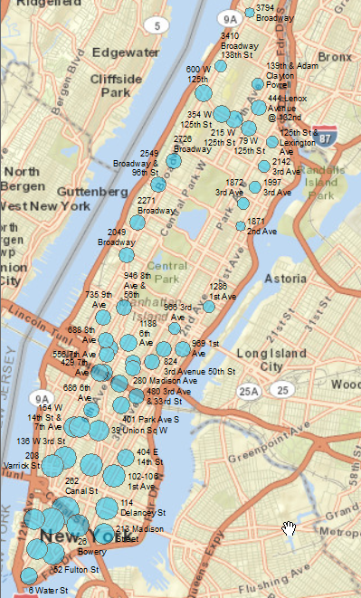
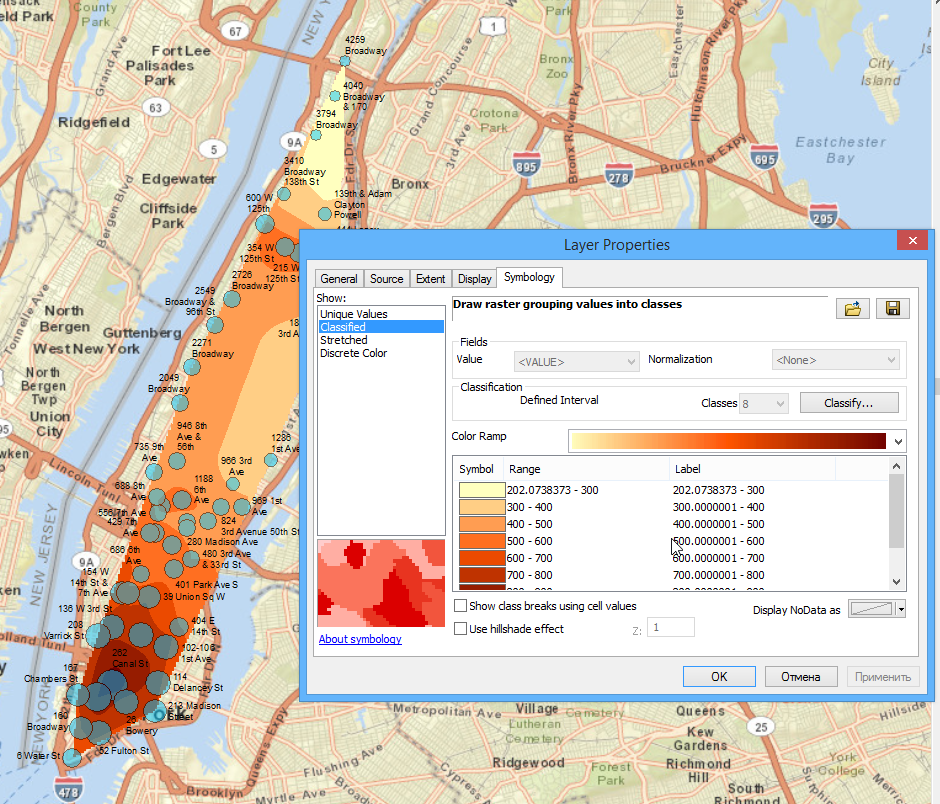
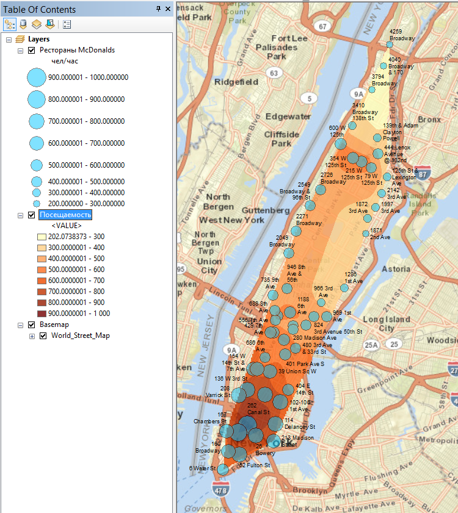

Упражнение 9 Адресное геокодирование
9.1 Введение
Цель — научиться выполнять пространственную привязку адресных данных методом геокодирования и построение карт на их основе.
| Параметр | Значение |
|---|---|
| Теоретическая подготовка | Геокодирование, адресные локаторы и их типы, интерполяция по данным в нерегулярно расположенных точках, методы интерполяции. |
| Практическая подготовка | Знание основных компонент интерфейса ArcGIS Desktop (каталог, таблица содержания, карта). Настройка символики и подписей объектов. Выделение объектов на карте. Пространственные и атрибутивные запросы. Оверлей. Инструменты геообработки. |
| Исходные данные | Таблица адресов ресторанов McDonald’s на территорию Манхэттена (Нью-Йорк) с данными о средней посещаемости. Картографический сервис Esri Streets. Сервис геокодирования NYSGIS. |
| Результат | Геокодированные точки адресов. Визуализация точек значками разного диаметра в соответствии с посещаемостью. Поле посещаемости, построенное по точечным данным. Проект карты с элементами компоновки (легенда, масштаб). |
| Ключевые слова | Геокодирование, адресный локатор, интерполяция данных. |
9.1.1 Контрольный лист
- Подключить картографический сервис Esri Streets
- Подключить сервис геокодирования NYSGIS
- Добавить на карту таблицу с адресами и геокодировать их в автоматическом режиме
- Исправить вручную несопоставленные точки
- Визуализировать точки значками разного диаметра в соответствии с числом посетителей
- Построить по точкам поле посещаемости методом естественных соседов (Natural Neighbor).
- Оформить итоговую карту распределения
9.1.2 Аннотация
Задание посвящено знакомству с геокодированием и построением непрерывных полей на основе точечных данных. Геокодирование — это определение координат объектов по их географическим текстовым описаниям, которые, как правило, выражены в виде адресов и/или почтовых кодов.
На основе точечных данных часто восстанавливают поле распределения некоторого показателя. В случае социально-экономических показателей это такие поля являются абстрактными и показываются псевдоизолиниями. Несмотря на то, что признак может не иметь истинно непрерывного распределения (как в случае этого задания — посещаемость ресторанов), показ с помощью изолиний бывает наглядным, дает лучшее представление о дифференциации территории, чем просто значки.
В работе вам предлагается совместно использовать эти 2 метода.
ВНИМАНИЕ: для выполнения задания необходимо подключение к сети Интернет.
9.2 Подключение к сервисам
-
Добавьте на карту в качестве основы картографический сервис Esri Streets. Его можно выбрать, используя команду Add Basemap на главной панели инструментов:
В появившемся диалоге выберите Streets:
Если подключение произошло корректно, появится картографическое изображение.
-
Увеличьте масштаб карты таким образом, чтобы был хорошо виден Манхэттен:

-
Подключитесь к ГИС-серверу официального портала штата Нью-Йорк. Для этого в окне каталога выберите команду GIS Servers > Add ArcGIS Server и в появившемся диалоге выберите Use GIS Services (использовать ГИС-сервисы), нажмите Далее:

-
В следующем диалоге в параметр Server URL скопируйте и вставьте следующий адрес и нажмите Finish (имя пользователя и пароль вводить не надо):
https://gisservices.its.ny.gov/arcgis/rest/services/Если соединение прошло удачно, в списке ГИС-серверов появится новое подключение к ГИС-серверу. Внутри него среди прочих сервисов должен располагаться адресный локатор Street_and_Address_Composite:
 Подключитесь в окне Каталога к вашей папке Ex09 и создайте в ней новую базу геоданных под названием Ex09. Назначьте ее базой данных по умолчанию.
9.3 Геокодирование адресов
-
В окне Каталога раскройте таблицу NYMcDonalds.xlx и перетащите ее первый лист на карту:

-
Откройте таблицу, чтобы просмотреть ее содержимое. В ней есть несколько полей, отвечающих за адрес, а также поле Visitors, хранящее информацию о среднем числе посетителей, обслуживаемых за один час:

-
Выберите в контекстном меню таблицы опцию Geocode Addresses, чтобы приступить к геокодированию:

В появившемся диалоге необходимо добавить сервис геокодирования, к которому вы осуществили подключение ранее.
-
Нажмите Add… и, используя навигацию по папкам, перейдите в каталог GIS Servers и найдите сервис геокодирования Street_and_Address_Composite. Выделите его и нажмите Add:

-
Далее выделите его и нажмите ОК:

-
В появившемся диалоге настроек геокодирования необходимо выбрать поля атрибутивной таблицы, из которых будет браться адресная информация. Заполните его следующим образом:
Параметр Значение Street or Intersection Address City or Placename City State State Output Shapefile or Feature Class …\Ex09\Ex09.gdb\NYMcDonaldsВыберите в поле Save as Type фильтр File and Personal Geodatabase Feature Class
Остальные параметры оставьте по умолчанию и нажмите ОК. После выполнения геокодирования появится диалог, сообщающий процент удачно геокодированных адресов (Matched). Нажмите Rematch, чтобы приступить к исправлению ошибок:

Появится диалог сопоставления адресов, а на карту будет добавлены удачно геокодированные точки. Выберите в списке Show Results режим Unmatched Addresses. Не закрывая диалог, увеличьте изображение таким образом, чтобы точки было хорошо видно:

Снимок экрана №1. Автоматически геокодированные точки на карте и список негеокодированных точек
Возникшие проблемы сопоставления адресов почти во всех случаях обусловлены тем, что для зданий на перекрестках указано сразу 2 адреса (427 10TH AVE & 34TH). Такая форма адреса не соответствует требованиям геокодера. Исключение составляет адрес «139TH & ADAM CLAYTON POWELL», в котором не указан номер дома ни по одной из улиц. Его вы обработаете отдельно.
-
Для разрешения неоднозначности выполните следующие действия:
-
Выделите строку с идентификатором «10» в таблице. В поле Street or Intersection в нижней левой части окна сотрите знак
&и все что после него. Строка «154 W 14TH ST & 7TH AVE» должна превратиться в строку «154 W 14TH ST»:

Нажмите Search. Среди полученных вариантов выберите имеющий ранг Score равный 100 (полное совпадение). Если таких адресов несколько, следует выбрать тот, что имеет заполненное поле House (дом).
-
Нажмите Match, чтобы сопоставить адрес. Результат должен выглядеть следующим образом:

-
Повторите эту последовательность действий для всех оставшихся строк.
-
Для кафе, располагающегося на перекрестке 139TH & ADAM CLAYTON POWELL вам необходимо узнать точный адрес по одной из этих улиц. Найдите этот адрес, используя поисковые возможности сети Интернет и введите его полностью (включая номер дома и полное название улицы) в поле Street or Intersection.
После выполнения правок все адреса должны быть сопоставлены и диалог примет следующий вид:

Снимок экрана №2. Результат ручного сопоставления адресов
Нажмите Close, чтобы завершить геокодирование.
Сохраните документ карты в свою папку Ex09 под названием Ex09_Geocoding.mxd.
9.4 Визуализация посещаемости в точках
-
Визуализируйте слой полученных точек методом значков. Выберите способ изображения Quantities — Graduated Symbols и задайте следующие параметры:
Параметр Значение Поле отображения Visitors Классификация С равным интервалом через 100 Размеры кружков От 8 до 24 Цвет кружков Голубой Диалог настройки свойств слоя примет следующий вид:

Установите прозрачность значков на вкладке Display равной 50%.
-
Переименуйте слой в «Рестораны McDonalds», а значение подписи показателя в заголовке легенды измените на «чел/час». Картографическое изображение примет следующий вид:

Откройте панель инструментов Labeling и включите механизм Maplex, чтобы получить доступ к расширенным настройкам подписей.
-
Включите подписи точек по полю Address. Установите размер шрифта равным 7.
Чтобы полученные надписи не загораживали значки, необходимо установить значкам высокий вес при размещении подписей.
-
Нажмите кнопку Label Weight Ranking на панели Labeling:

-
В открывшемся диалоге установите значение веса точек равным 1000:
 -
Нажмите ОК. После выполнения этих действий подписи будут размещены в стороне от значков:
Снимок экрана №3. Градуированные значки с подписями
Сохраните документ карты
9.5 Построение поля посещаемости
Наглядность представления пространственного распределения можно повысить, построив по точкам непрерывное поле и отобразив его методом послойной окраски. Восстановление поля по точечным данным делается с помощью интерполяции. Методы интерполяции расположены в группе инструментов Spatial Analyst Tools > Interpolation.
-
Запустите инструмент интерполяции данных Spatial Analyst Tools > Interpolation > Natural Neighbor (метод естественного соседа) и заполните его параметры следующим образом:
Параметр Значение Input Point Features Рестораны McDonalds Z Value Field Visitors Output Raster …\Ex09\Ex09.gdb\VisitorsOutput Cell Size 50 Метод естественного соседа осуществляет интерполяцию на основе диаграммы Вороного точек. Полученный растр будет добавлен на экран. Переименуйте его в «Посещаемость»:

-
Дважды щелкните на растре, перейдите на вкладку Symbology и измените параметры его отображения следующим образом:
Параметр Значение Способ отображения Classified Классификация С равным интервалом через 100 Шкала От желтого к темно-красному Диалог настройки слоя примет следующий вид:
 -
Перейдите на вкладку Display и установите параметр прозрачности (Transparency) равным 20%, чтобы сделать послойную окраску полупрозрачной. Нажмите ОК. Картографическое изображение примет следующий вид:
Снимок экрана №4. Поле распределения посещаемости
Сохраните документ карты
9.6 Оформление карты
Переключитесь в режим компоновки и установите масштаб карты равным 1:100 000. Оформите карту в соответствии с нижеприведенным образцов, экспортируйте ее в графический файл и вставьте в отчет.

9.7 Контрольные вопросы
Что такое геокодирование?
Можно ли получить доступ к базовым картам и инструментам геокодирования по сети, не имея их на своем компьютере? Если да, то что для этого необходимо сделать?
В чем заключается процесс ручного сопоставления адресов и почему возникает необходимость в этом?
Какой метод интерполяции вы использовали в работе для построения поля распределения? В чем заключается принцип его работы? (для ответа прочтите справку инструмента)